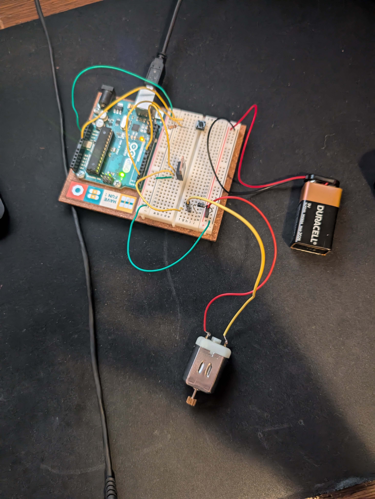
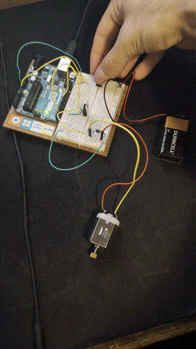

hw9 blog post
Transistors!!!! The technological wonder that shaped the computer industry today-
This week we got to use transistors, a standalone diode, and varying voltage loads with a motor! By using the transistor, we were able to use a 5v load to control a separate 9v circuit. Using transistors as a switch is a very practical use and helps make controlling more high-power loads with small microcontrollers much easier. The diode allowed for the motor to not run in reverse and generate electricity, messing with our circuits-
There were so many fun small things that I have heard about before that all got to come together for a final product- a spinning windmill! It was very good to properly learn how to handle transistors and not blow things up. I had messed around with using transistors to control an rgb led strip- but that was 12V and I did not have great power handling in place, and my breadboard has a nice melt spot in the pin where the transistor was…

The setup.

Funcitoning hourglass
Circuit Diagram